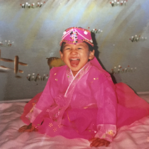

This is my story.
I'm a mix of Japanese and Korean. I was a curious child who think about social issues or global environment so I majored in Agricultural Development in Tokyo University of Agriculture. I studied how to improve people's life, especially in rural area of Africa. After graduated from the University, I was supposed to go abroad to work in the area but I couldn't due to COVID-19.
This was the turning point. I seeked what I should do, what I really want to do and how I can contribute in this world. Finally, I found the answer. This is the programming. I love trying new things, creating something and working as a team. My passion is here.